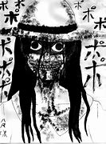

Hachishakusama, también conocida como “la mujer de ocho pies”, es una leyenda urbana japonesa que ha aterrorizado a los niños durante generaciones. Según la leyenda, Hachishakusama es una mujer alta y delgada que viste un kimono blanco y un sombrero de paja. Aparece en los campos de arroz y llama a los niños con una voz suave, pidiéndoles que la acompañen. Los niños que la siguen desaparecen misteriosamente.
Pero, ¿sabías que la leyenda de Hachishakusama tiene una base real? En la década de 1960, en la prefectura de Nagasaki, Japón, hubo varios informes de niños desaparecidos. La policía nunca encontró a los niños, pero los lugareños comenzaron a hablar de una mujer alta y delgada que había sido vista merodeando por los campos de arroz. La leyenda de Hachishakusama nació a partir de estos informes.
Aunque la verdadera identidad de Hachishakusama sigue siendo desconocida, la leyenda ha perdurado en la cultura popular japonesa y ha inspirado películas de terror y videojuegos. ¿Qué hay detrás de esta leyenda? ¿Cómo se convirtió en una historia de terror tan popular? Descubre la verdadera historia de Hachishakusama y descubre por qué sigue aterrorizando a los niños en la actualidad.
¿Alguna vez has escuchado hablar de Hachishakusama? La leyenda japonesa que ha aterrorizado a generaciones enteras con su apariencia escalofriante y su capacidad para desaparecer a niños pequeños sin dejar rastro. Pero, ¿sabías que esta historia tiene una base real? Sí, lo has leído bien. ¡Hachishakusama existe de verdad!
La historia de Hachishakusama comienza en la década de 1960, en la ciudad de Hiroshima, Japón cuando desaparecieron varios niños pequeños sin explicación alguna. Los padres de los niños afirmaban haber visto a una mujer alta y delgada con una máscara de Hannya (una máscara tradicional japonesa) cerca de sus casas. Esta mujer hablaba en un tono suave y atraía a los niños para que la siguieran. Después de que se llevara a los niños, nunca se volvieron a ver.
La policía japonesa comenzó a investigar y descubrió que la mujer detrás de estas desapariciones era una anciana llamada Masako Mizutani. Mizutani había estado usando una máscara y un disfraz para atraer a los niños y llevarlos a su casa. Allí, los mantenía cautivos en su sótano y les hacía daño. La policía encontró el sótano lleno de juguetes y ropa de niños.
Pero, ¿por qué Mizutani se hacía llamar Hachishakusama? Según los informes, Mizutani creía que era la reencarnación de una diosa japonesa llamada Hachishakusama, que tenía la capacidad de cambiar su apariencia y desaparecer a los niños. Esta creencia llevó a Mizutani a cometer actos terribles y aterrorizar a toda una ciudad.
La historia de Hachishakusama es una muestra de cómo las leyendas pueden tener una base real y ser aún más aterradoras de lo que imaginamos. Es importante recordar que detrás de cada leyenda hay una historia real y que debemos estar atentos a las señales de peligro. No te dejes engañar por la apariencia de alguien y siempre mantén a tus seres queridos cerca.
